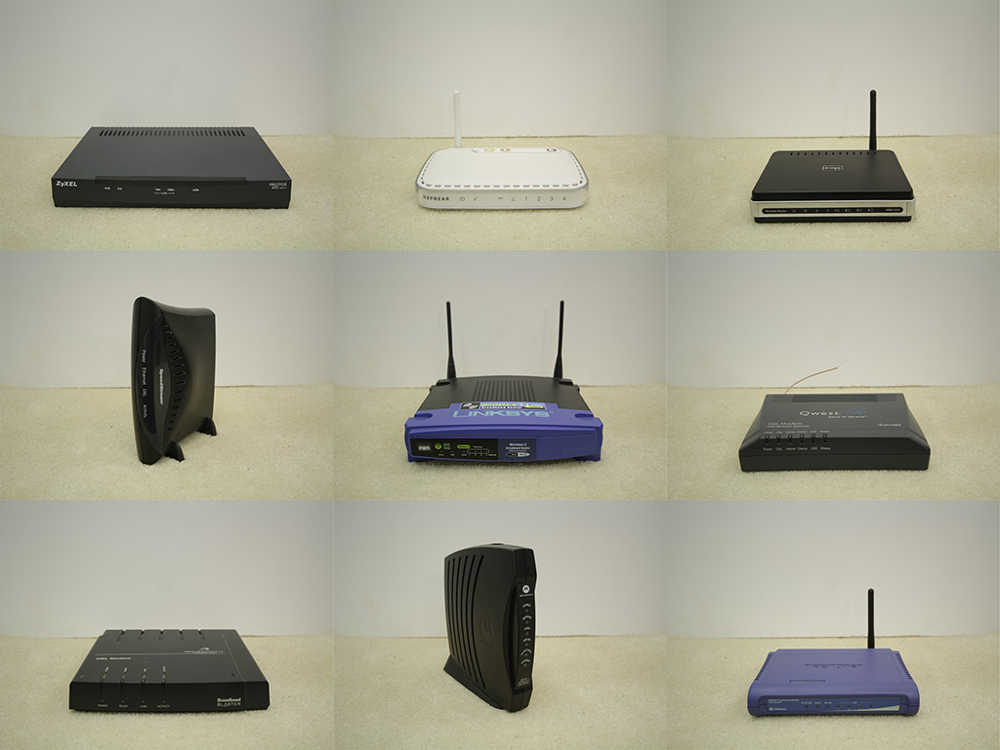
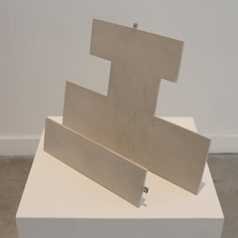
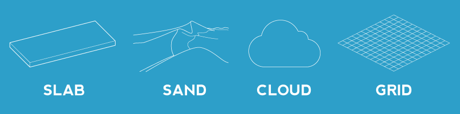
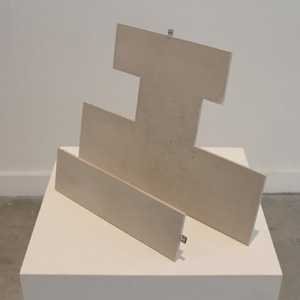
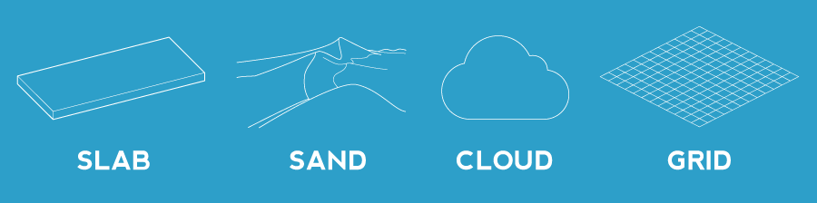

When we get comfortable enough with a system, the nuances of its topology fade away. Our words
begin to mirror our internal mapping of concepts, apparent when we use a word like "WIFI" as a metonym
for the Internet in whole. But WIFI only takes us to another local node, not to our data spread around the
world. Before our bits hit the wild Internet, they must pass through a router, or as this type of computer
was originally called, a gateway. While we don't often consider the different types of physical gates or
doors we use every day, we at least understand there is a radical difference between the experience of a
border crossing and a shower curtain. Computer networks are no less diverse.
The cliché of cyberspace is founded in such a spatial conception of information systems— a user of a
network experiences being in a place, clicking through login screens and menus as if they were landmarks
or checkpoints on a journey. Our everyday routines lead us along familiar routes: from the devices we use
to the local networks we access; to the websites we check regularly, but our vocabulary is weak when it
comes to scrutinizing these spaces in comparison to our nuanced language in discussing the politics of
our cities.
When gadgets and gadget-makers are such prominent topics of contemporary conversation, it is worth
noting that one of the many devices which serve a pivotal function in the consumer electronics
ecosystem seems to thoroughly dissolve into the collective unconscious: the Internet router, a
cornerstone of any home network, is rendered invisible in its role as diligent and uncomplicated access
point. Despite the fact that the entirety of a household's correspondence, inquiries, and entertainment
pass through this single object, the device itself is left completely untouched by the experience, free from
any marks which could evoke the conditions of its use. Unlike other devices that serve as constant
companions, living in pockets and backpacks, subject to regular contact with the flesh of their users,
a router is touched infrequently, if at all, between the moments of installation and disposal. The router witnesses
all but accumulates no memories; it is the non-place of cyberspace.

{kind=link}
{kind=link}
{kind=link}
{kind=link}
 





{kind=link}